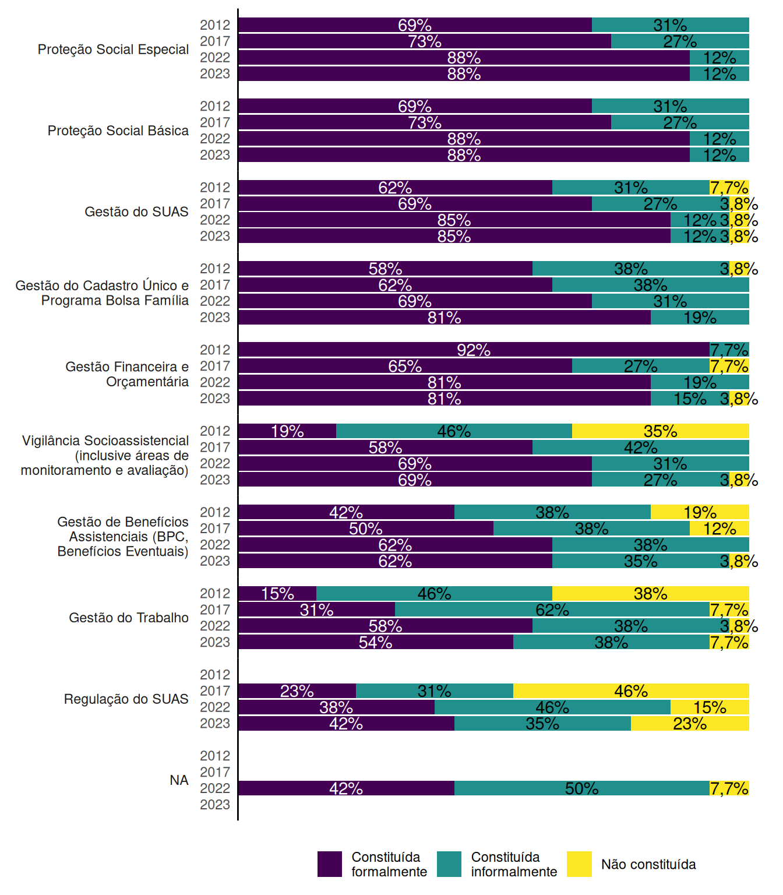
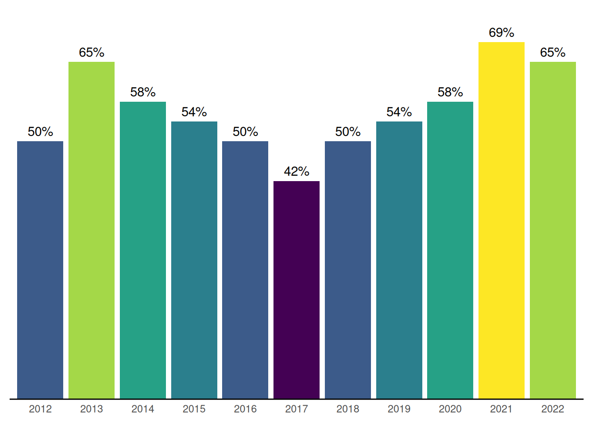
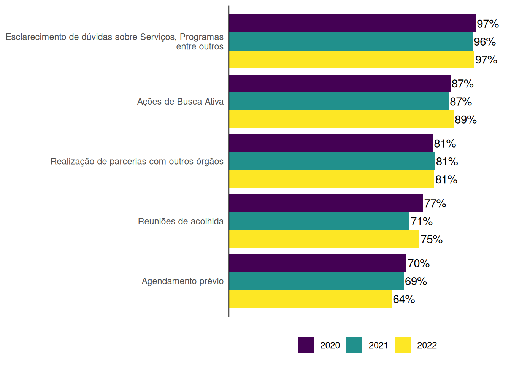

2 Gestão e Financiamento
O Sistema Único de Assistência Social (SUAS) é definido pela Lei Orgânica da Assistência Social (LOAS)1 como um sistema descentralizado e participativo que organiza a gestão das ações na área de assistência social, a partir das diretrizes: descentralização político administrativa, participação social e primazia da responsabilidade do Estado na condução da política de assistência social. Assim, tem como um de seus objetivos a consolidação da gestão compartilhada dos três entes federados.
A LOAS, a NOB SUAS2 e outros normativos que regulam a assistência social definem as responsabilidades da união, estados, Distrito Federal e municípios no âmbito da gestão compartilhada, que incluem o cofinanciamento de serviços, programas e ações da assistência social. Estão previstas, ainda, instâncias de pactuação e interlocução entre os três entes federados: a Comissão Intergestores Bipartite (CIB), da qual participam representantes de estados e municípios, e a Comissão Intergestores Tripartite (CIT), da qual participam, além de estados e municípios, representantes do governo federal.
2.1 Estrutura Administrativa normas e planejamento
A partir das informações contidas no Censo SUAS, é possível ter um panorama geral da gestão e do financiamento em estados e municípios, observando-se aspectos da estrutura administrativa da gestão da assistência social, a atualização de normativos, o apoio de estados aos municípios, as atividades de cofinanciamento e transferência de recursos, funcionamento das instâncias de pactuação, entre outras.
A estrutura administrativa na Política de Assistência Social e Constituição de setores essenciais são elementos importantes para gestão do SUAS. No âmbito da gestão estadual, no que se refere a exclusividade da área de Assistência Social, percebe-se que nos últimos 10 anos houve uma redução de áreas específicas de Assistência Social. Em 2012 existiam 29,6%3 das secretarias estaduais exclusivas de Assistência Social, em 2022 esse número passa para 3,8%4, redução significativa de 87,2%, conforme o Gráfico 2.1.
No que se refere aos municípios, esse cenário nacional se configurou inverso ao das gestões Estaduais. Observa-se através do Gráfico 2.2 um aumento de 217 municípios (1,5 pontos percentuais) com secretarias exclusivas de Assistência Social do período de 2012 a 20195.
Alguns órgãos gestores estaduais constituíram as áreas de assistência social como subdivisões administrativas em sua estrutura, como superintendências, departamentos, gerências, coordenações, dentre outras. De acordo com o último Pacto de aprimoramento Estadual do SUAS6 umas das prioridades para o aperfeiçoamento institucional é possuir na estrutura administrativa das seguintes áreas:
- Proteção Social Básica;
- Proteção Social Especial de Média e Alta Complexidade;
- Gestão do SUAS, com suas subdivisões de Vigilância Socioassistencial, Regulação do SUAS e Gestão do Trabalho; e
- Gestão do Fundo Estadual de Assistência Social - FEAS.
Observa-se avanço em todas as áreas formalmente nos últimos 10 anos. As três áreas mais instituídas formalmente são: Proteção Social Básica e Proteção Social Especial, com 88%, e Gestão do SUAS, com 85% (Gráfico 2.3).

Quando se observa a regularização dessas áreas, percebe-se que há um grupo instituído informalmente conforme o Gráfico 2.4, e setores que ainda não estão constituídos em 100% dos estados, a saber Gestão do SUAS, Gestão do trabalho e regulação do SUAS.
No que se refere aos municípios, a última pactuação sobre estrutura administrativa a partir dos portes populacionais dos municípios7 prevê:
Municípios de pequeno I e II e médio porte: 100% dos municípios com instituição formal, na estrutura do órgão gestor de assistência social, as áreas constituídas de Proteção Social Básica, Proteção Social Especial e a área de Gestão do SUAS com competência de Vigilância Socioassistencial.
Municípios de grande porte e metrópole: 100% dos municípios com instituição formal, na estrutura do órgão gestor de assistência social, áreas constituídas de Proteção Social Básica, Proteção Social Especial, com subdivisão de Média e Alta Complexidade, Gestão Financeira e Orçamentária, Gestão de Benefícios Assistenciais e Transferência de Renda, área de Gestão do SUAS com competência de: Gestão do Trabalho, Regulação do SUAS e Vigilância Socioassistencial.
O Gráfico 2.5 mostra crescimento formal de todas as áreas administrativas. As áreas do SUAS com maior percentual de constituição formal8 que dispõe sobre esta organização são respectivamente: Gestão do Cadastro Único e Bolsa Família, Gestão da Proteção Social Básica e Gestão do SUAS.
Quanto às subdivisões administrativas, nota-se que em relação à constituição informal ou ausência dela, as que possuem o maior percentual são a Gestão do trabalho e a Vigilância Socioassistencial. Destaca-se, também, a Proteção Social Especial, cuja existência é recomenda independente da presença de CREAS (Gráfico 2.6).
A uniformização da Lei do SUAS dos estados e municípios em consonâcia com a LOAS foi deliberação da X Conferência Nacional. Sobre essa disposição, observa-se que nas gestões estaduais, 15 estados (58%) possuem Lei Estadual de regulamentação do SUAS (total de 15 estados). As últimas atualizações ocorreram a partir de 2017 (12 estados), com exceção de Minas Gerais em 2011 Goiás em 2015 e Mato Grosso do Sul em 2016.
Entretando, 11 estados que não possuem Lei do SUAS. Este número está presente nas seguintes regiões do Brasil:
Nordeste (4): PI, RN, SE e BA,
Norte (3): RR, PA e TO
Região Sul (2): PR, SC e RS
Região Sudeste (1): SP.
Em 2022, 75% dos municípios possuíam Lei Municipal de regulamentação do SUAS (4.170). Destes, a maioria, 91% (3.798) aprovaram e/ou atualizaram após 2013 e 9% (372) anterior a atualização da Lei Nacional9 e a NOB SUAS/2012 conforme detalha o Gráfico 2.8. A inexistência de Lei é encontrada em 25% (1.400) dos municípios.
O Plano de Assistência Social é uma obrigatoriedade para existência de confinanciamento federal. O Plano Estadual de Assistência Social (PEAS) deve ser aprovado pelo Conselho Estadual de Assistência Social (CEAS). Os dados do Gráfico 2.9 sinalizam que a partir de 2020 há um decréscimo desta atualização com devida aprovação do conselho10 11.
O Plano de apoio técnico aos municípios também é um produto a ser realizado pelos Estados e previsto no último pacto de aprimoramento Estadual do SUAS12. De acordo com Censo Suas 2022, 57,69% dos Estados possuem este plano pactuado na CIB. Este percentual reduziu em relação ao ano de 2017, na qual mais de 77% dos estados informaram possuir este documento pactuado nesta instância de comissão intergestores bipartite (CIB).
A NOB SUAS 2012 também evidencia o papel dos estados frente as atribuições de apoio técnico e financeiro aos municípios13 na qual compreende ações de:
- Capacitação;
- Elaboração de normas e instrumentos;
- Publicação de materiais informativos e de orientações técnicas;
- Assessoramento e acompanhamento; e
- Incentivos financeiros.
Em 2022, todos os estados informaram realizar alguma modalidade de apoio técnico aos municípios. Os maiores percentuais observados referiam-se ao Apoio Técnico individualizado a municípios específicos ofertado por 96,2% dos estados (25). Os menores percentuais eram referentes a Seminários 46,2%, (12). Outras formas eram ofertadas por 15,4% dos estados (Gráfico 2.11).
Entre 2013 e 2022 o percentual de estados que prestavam assessoramento técnico a distância aumentou significativamente, passando de 42,3% (11) em 2013 para 92,3% (24) em 2022.
No Gráfico 2.12 os dados percentuais mostram um aumento gradual dos municípios que informam receber visitas da gestão estadual para apoio técnico. Entretanto 62,5% informam não ter recebido visita de apoio técnico no último ano.
No que se refere a Educação Permanente, nota-se um aumento dos estados que possuem Núcleo de Educação Permante (Gráfico 2.13).
O censo de 2022 sinaliza 88,5% (23) dos Estados possuem esta instância colegiada de maneira formal. Trata-se de um foro constituído pela participação e cooperação institucionalizada de gestores, trabalhadores, usuários, conselheiros de assistência social, e instituições de ensino, pesquisa e extensão. O objetivo é deliberar sobre a implementação continuada da Política de educação permanente do SUAS.
Em relação ao Plano de Educação Permanente, de acordo com Censo SUAS de 2021, 13,9% (769) dos municípios possuem este plano. Esse percentual, como pode ser observado no Gráfico 2.14, teve evolução residual últimos anos14.
2.2 Financiamento e Gestão Financeira
O modelo de gestão do SUAS preve cofinanciamento compartilhado entre os três entes federados15. Nesta perspetiva, nos últimos 10 anos, percebe-se um avanço sobre a participação dos estados no cofinanciamento estadual com participação de 96,15% (25) dos estados que informam cofinanciar os municípios (Gráfico 2.15).
A forma de cofinanciamento deve ser viabilizada por meio de transferência automática regular entre os fundos de assistência social (Fundo a Fundo). Sobre esse item, observa-se que em 2012, 26,63% (8) dos estados realizavam cofinanciamento na modalidade de apenas Fundo a Fundo e 25,9% (7) apenas por convenio. Em 2022, 88,46% (23) dos estados realizavam cofinanciamneto regular e automático, existindo a prática exclusiva por convênio.
Apesar destes avanços, há registros de não cofinanciamento estadual, no qual caiu de 25,93% (7) no ano de 2012 para 3,85% (1) em 2022 (1)16.
O Gráfico 2.16 evidencia a quantidade de estados quando ao cofinanciamento aos municípios por blocos. Os dados dos últimos 10 anos, sinaliza que o número de estados que cofinanciam os municípios vem aumentando. Sobretudo o cofinanciamento da proteção social especial (Média e Alta Complexidade), em seguida Benefícios Eventuais. No que se refere aos últimos 5 anos houve uma redução na destinação de recursos para proteção social básica e incentivos do SUAS.
O ordenador de despesa responde pela emissão de empenho, autorização de pagamento dos recursos do fundo de assistência social. Assim, recomenda-se que este tenha amplo conhecimento sobre a política. O Gráfico 2.17 sinaliza que 73% dos gestores estaduais são ordenadores de despesa do fundo estadual. Dado que reduziu a partir de 2018.
No que se refere aos municípios, aproximadamente 80% das/os secretárias/os municipais são ordenadores de despesa do Fundo Municipal. Esse percentual aumentou a partir de 2016.
O Gráfico 2.18 também mostra que as/os prefeitas/os enquanto ordenadores de despesa da política de Assistência Social vem reduzindo ao longo dos anos. Dado que se revela como positivo, haja vista o gestor municipal encontra-se no cotidiano do planejamento desta política pública, sendo mais apropriado para tomar as decisões sobre o orçamento.
2.3 Programas de execução própria executadas pelos estados
Em relação aos programas próprios de transferência de renda executados pelos estados, percebe-se um aumento ao longo dos anos na qual em 2022, 65% dos estados informaram que possuem conforme o Gráfico 2.19.

Destes estados (17) que informam possuir programa próprio de transferência de renda, 82,3% utilizam o Cadastro Único para seleção das pessoas beneficiárias.
2.4 Gestão do Cadastro Único17
O Cadastro Único para Programas Sociais do Governo Federal (Cadastro Único) instituído pelo art. 6º-F da Lei nº 8.742, de 7 de dezembro de 1993 (Lei Orgânica da Assistência Social), e regulamentado pelo Decreto nº 11.016, de 29 de março de 2022 tem a finalidade de coletar, sistematizar e disseminar informações que permitem a identificação e caracterização das condições socioeconômicas das famílias em situação de vulnerabilidade social, sobretudo para as famílias de baixa de renda.
O objetivo é conhecer, incluir e aprimorar as políticas sociais através do acesso a serviços, programas, benefícios, identificação das famílias e territórios vulnerabilizados, bem como ações intersetoriais.
A gestão do Cadastro Único é compartilhada entre União, estados, municípios e Distrito Federal. Cabe aos estados o apoio técnico, capacitação, monitoramento e avaliação. É nos municípios que estão os locais de cadastramento e toda gestão territorial da identificação das famílias neste cadastro público.
As unidades do Cadastro Único podem ser encontradas em locais exclusivos ou na rede de atendimento socioassistencial de CRAS, CREAS, Centro POP. Dados do Censo SUAS mostram uma evolução de locais de cadastramento, sobretudo a partir de 2017.
Sobre a distribuição destes locais de Cadastro Único, destaca-se que em 2022, 31% (2.892) são unidades exclusivas de Cadastro Único e 68% (6.435) estão em unidades da rede socioassistencial18 conforme pode ser observado na tabela Tabela 2.1.
| Unidades | 2017 | 2018 | 2019 | 2020 | 2021 | 2022 |
|---|---|---|---|---|---|---|
| CRAS | 5.669 | 5.508 | 5.923 | 5.729 | 5.937 | 6.090 |
| CREAS | 281 | 174 | 199 | 199 | 208 | 230 |
| Centro POP | 112 | 83 | 84 | 108 | 106 | 115 |
| Postos Cadastro Único | - | - | - | 2.530 | 2.695 | 2.892 |
| Total | 6.062 | 5.765 | 6.206 | 8.566 | 8.946 | 9.327 |
A respeito da estrutura física das unidades exclusivas do Cadastro Único destacadas acima, 61,0% encontram-se na sede da Secretaria de Assistência Social e 24,3% em estruturas específicas. Os demais percentuais são encontrados em outra unidade administrativa como, em um serviço integrado, OSC´s, conselho ou escola.
No que se refere a gestão territorial, cabe as coordenações do Cadastro Único dos municípios o atendimento, a supervisão, o monitoramento e a avaliação dos processos de cadastramento, seja em postos específicos ou integradas as unidades da rede socioassistencial.
O Gráfico 2.20 sinaliza que, no âmbito da gestão municipal, as ações de levantamento de famílias para atualização e inclusão cadastral são a mais realizada. A menor proporção se refere a ações de elaboração de análises utilizando dados do Cadastro Único (Gráfico 2.20)19.
O Gráfico 2.21 sinaliza que as ações de esclarecimento de dúvidas sobre serviços, programas entre outros são realizadas pela grande maioria das unidades do Cadastro Único (96,82%). Já as ações de agendamento para atendimento são realizadas por 64,35% das unidades, com redução ao longo dos anos20.

Faz parte de procedimentos de qualificação do Cadastro Único ações de averiguação e revisão cadastral. A averiguação é um processo de verificação das informações registradas no Cadastro Único por meio da comparação dos dados declarados pelas famílias com outros dados e registros administrativos do governo federal. Já a revisão é um procedimento de atualização das famílias com registros desatualizados. O tempo considerado para um cadastro desatualizado é de 24 meses. O Gráfico 2.22 refere-se as informações de averiguação e revisão cadastral no âmbito dos postos dos Cadastro Único dos municípios. Nota-se que ao longo dos anos, essas ações aumentaram,sobretudo as ações de busca ativa e identificação do público de averiguação e revisão cadastral como público prioritário.
Em relação as informações de unidades de Postos do Cadasto Único e o atendimento de Grupos Populacionais Tradicionais e Específicos - GPTEs, destaca-se através do Gráfico 2.23 o percentual de unidades de postos do Cadastro Único que informam atender no período de 2020 a 2022.
O cadastramento domiciliar permite uma aproximação com aspectos do cotidiano das famílias, visto que a coleta das informações ocorre por meio do encontro da gestão até as famílias. Essa ação objetiva assegurar o acesso a inclusão ou atualização cadastral na residência das pessoas. De acordo com informações do Gráfico 2.24 as situações mais frequentes para visita domiciliar são para averiguação cadastral e inclusão/atualização de dados do BPC (Benefício de Prestação Continuada - BPC).
Em relação as ações de complementariedade com a rede socioassistencial, destaca-se que a maioria destas unidades de cadastramento realizam encaminhamentos para rede socioassistencial de CRAS, CREAS, Centro POP entre outros (Gráfico 2.25).

O Gráfico 2.26 sinaliza sobre a existência da participação das unidades do Cadastro único no planejamento dos recursos recebidos no âmbito do IGD-PBF (Índice de Gestão Descentralizada da Gestão do Bolsa Família e Cadastro Único).
Trata-se de um recurso repassado aos estados e municípios para apoio a gestão do Cadastro Único e Bolsa Família. Esta informação é referente a respostas do formulário dos postos de cadastramento em âmbito dos municípios.
2.5 Considerações Finais
A Assistência Social é uma política de previsibilidade constitucional reafirmadas por lei, normas, decretos, pactos. Assim, faz-se essencial padrões de gestão e comandos únicos em todos os entes federados. Os dados históricos sinalizam avanços e desafios para gestão do SUAS.
Os órgãos gestores da assistência social, tanto estaduais quanto municipais, são estruturas fundamentais para a execução desta política. O direito devem caminham junto com o planejamento, ofertas continuadas, padrões de respostas, comandos únicos etc.
Assim, para consolidação desta política que faz-se universal nos territórios, é fundamental em todos entes federados estruturas administrativas indicadas nos pactos, Lei compatível com LOAS, conforme deliberação das conferências nacionais, comando único do gestor da pasta entre outros.
Os dados sinalizam avanços, a respeito das subdivisões administrativas que apresentavam maior percentual de formalização nos órgãos gestores estaduais em 88,5% dos estados. As que apresentavam menores percentuais de formalização nos órgãos gestores estaduais eram as de Regulação do SUAS (38,5%) e de Gestão do Trabalho (57,7%). Nos municípios, destaca-se forte presença de formalização das gestões do Cadastro Único e Bolsa Família, bem como a proteção social básica, com 80,68% e 77,90% respectivamente.
Os recursos recebidos via transação fundo-a-fundo, garantem maior qualidade na distribuição, já que estes são fiscalizados pelos órgãos de controle social e passam pelo crivo das Comissões Intergestores Bipartite e Tripartite. Sobre o repasse, destacam-se o avanço ao longo dos anos nesta forma repasse aliado ao cofinanciamento, sendo mais presente o cofinancimento a Proteção Social Especial.
Aspectos relacionados a Gestão do Cadastro Único foi incorporada nesta versão do Censo SUAS 2022, o objetivo é afirmar a importância deste instrumento do SUAS. O Cadastro Único é uma ferramenta que visa potencializar as funções de proteção social, vigilância socioassitencial e defesa de direitos, Para isso, os dados promovem acesso a serviços e programas, identificação das famílias e leitura dos territórios, bem como parcerias e ações intersetoriais.
Destaca-se que do total de unidades de postos do Cadastro Único, 68% estão na rede socioassistencial e 31% em postos exclusivos. Sobre estas unidades, identifica-se que mais realizadas são Levantamento do número de famílias que precisam ter seus cadastros incluídos ou atualizados e, a menos desenvolvida é Elaboração de análises, sínteses e documentos utilizando os dados do Cadastro Único.
Em relação aos posto exclusivos do Cadastro Único, as informações sinalizam que 93% destas unidades encaminham famílias para rede socioassistecial, bem como 88% recebem os encaminhamentos desta rede. Enquanto desafios, destaca-se a importância da participação dos profissionais das unidades de postos do Cadastro Único no planejamento do IGD Bolsa Família. Os dados Censo SUAS 2022 sinaliza que 23% deste planejamento é realizado apenas pelo órgão gestor.
Lei nº 8.742, de 7 de dezembro de 1993: Dispõe sobre a organização da Assistência Social e dá outras providências. (http://www.planalto.gov.br/ccivil_03/Leis/L8742compilado.htm)↩︎
Norma Operacional Básica NOB - SUAS 2012 (http://www.mds.gov.br/webarquivos/arquivo/assistencia_social/nob_suas.pdf)↩︎
Estados: Amazonas, Acre, Pará, Amapá, Piauí, Paraíba, Sergipe e São Paulo↩︎
Estado do Amazonas↩︎
a partir de 2019 essa pergunta foi retirada do formulário de gestão municipal↩︎
Resolução CNAS Nº2, de 16 de março de 2017↩︎
124ª reunião ordinária da CIT - Pacto de Aprimoramento do SUAS↩︎
A regulamentação destas areas essenciais devem estar previstas no organograma. A Lei do SUAS Lei nº 12.435, de 06/07/2011 altera a Lei Organiza da Assistência Social (LOAS) - nº 8.742, de 07/.12.1993↩︎
Lei nº 12.435, de 06/07/2011 altera a Lei Organiza da Assistência Social (LOAS) - nº 8.742, de 07/.12.1993↩︎
Para os anos de 2016, 2017, 2018 e 2019 as perguntas alteraram, impossibilitando a linha histórica↩︎
Para os municípios não foi possível fazer essa linha histórica em decorrência de mudanças nas perguntas↩︎
Resolução CNAS Nº2, de 16 de março de 2017↩︎
Capítulo III - NOBSUAS/2012↩︎
Para o ano de 2022 essa pergunta foi extinta↩︎
Art. 30-A. O cofinanciamento dos serviços, programas, projetos e benefícios eventuais, no que couber, e o aprimoramento da gestão da política de assistência social no Suas se efetuam por meio de transferências automáticas entre os fundos de assistência social e mediante alocação de recursos próprios nesses fundos nas 3 (três) esferas de governo.↩︎
o Estado do Acre não cofinancia os municípios↩︎
O formulário do posto do Cadastro Único foi criado em 2020, assim a maioria das informações disponíveis terão referência a partir desta data.↩︎
CRAS, CREAS e CENTRO POP↩︎
estas informações são do formulário de Gestão Municipal, assim se referem a informações gerais que a gestão informa realizar, destaca-se também que estas informações estão disponíveis a partir do ano de 2020 entretanto, só foi possível gerar a partir de 2021 em decorrência de problemas na leitura da base↩︎
estas informações são dos postos que executam exclusivamente atividades do Cadastro Único↩︎